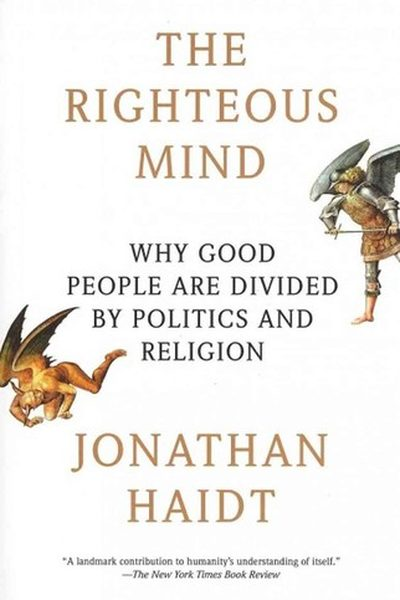

Library › Psychology & People
The Righteous Mind — Summary & Key Lessons

Why good people are divided by politics and religion — the science of moral intuition and the six moral foundations.
📖 OPEN THE FULL INTERACTIVE BREAKDOWN →🌐 Read it in Hindi, Hinglish, Gujarati, Tamil & 22 more languages — free, with audio.
💡 The Big Idea
Haidt's famous metaphor: the mind is an elephant (intuition) with a rider (reason). The rider thinks he's in charge, but he's mostly the elephant's lawyer — justifying gut feelings after the fact. Our moral judgments are quick intuitions shaped by six innate 'taste buds': care, fairness, loyalty, authority, sanctity and liberty. Political differences aren't stupidity — they're different moral taste buds tuned to different weights. Understanding this makes disagreement less maddening and more navigable.
🧠 The 5 Key Lessons
Lesson 1: The Elephant and the Rider
Where Morality Comes From
Reason is not the driver of our judgments — intuition is. The elephant (gut feeling) decides first; the rider (reason) constructs justifications after. This is why arguments rarely change minds: you're arguing with the rider while the elephant isn't listening.
📖 Example: Haidt's experiments: people presented with harmless taboo acts (like a family eating their dog after it died) instantly called it wrong — then struggled to find reasons. The judgment came first; the reasoning followed to serve it. Read the full example →
⚡ Do this: Next time you feel 'this is just wrong', notice your gut fired before your brain. That awareness is the first crack in the illusion of pure reason.
Lesson 2: The Six Moral Taste Buds
The Moral Foundations
Haidt identifies six innate moral intuitions: Care (protect the vulnerable), Fairness (proportional justice), Loyalty (tribe), Authority (respect hierarchy), Sanctity (purity/disgust) and Liberty (freedom from oppression). Everyone has all six — but people weight them differently, which explains most political and cultural clashes.
📖 Example: A classic finding: political progressives in Western countries rely mostly on Care and Fairness, while conservatives use all six more evenly. So each side literally experiences different moral worlds — not one side being 'right'. Read the full example →
⚡ Do this: Take your strongest disagreement and map it to the taste buds: which foundations does the other side feel are being violated? Understanding the taste bud is the start of a real conversation.
Lesson 3: We Are 90% Chimp, 10% Bee
The Hive Hypothesis
Humans are selfish (chimp) but also groupish (bee): we can lose ourselves in a collective — religion, nation, team, company — and feel transcendent unity. This 'hive switch' is why groups achieve what individuals can't, and why identity politics is so powerful.
📖 Example: Haidt describes soldiers who miss the war — not the danger, but the total belonging. Fans losing themselves in a stadium, devotees in prayer, teams in flow: the hive switch makes individuals stronger together. Read the full example →
⚡ Do this: Find a healthy hive — a team, community, cause — where you lose yourself weekly. Belonging is a human need, not a luxury.
Lesson 4: Liberty and Oppression: The Sixth Taste Bud
The Liberty Foundation
Beyond the original five foundations, Haidt added Liberty: the sensitivity to domination and bullying. When people feel controlled, they react with anger and rebellion — even against their own self-interest. This explains protests, revolutions, and why being told 'you must' triggers resistance.
📖 Example: The Tea Party and Occupy movements were both liberty-driven — one against government overreach, one against corporate overreach. Same taste bud, different targets. Read the full example →
⚡ Do this: When you feel resistance to an instruction, ask: 'Is this about the task — or about being controlled?' Often the resistance is the liberty bud, not the logic.
Lesson 5: Can't We All Disagree More Constructively?
The Righteous Mind and Politics
Haidt's plea: stop assuming opponents are stupid or evil. They're running on different moral taste buds. Real persuasion requires understanding the other side's foundations and speaking to them — not just repeating your own. And in groups, diversity of moral taste buds makes better decisions.
📖 Example: The book's 'liberal arts' experiment: when liberals and conservatives were mixed in a room, they solved problems better than homogeneous groups. Disagreement done well is a superpower. Read the full example →
⚡ Do this: This week, have one conversation where you ONLY ask questions about the other side's values — no rebuttals. See what the elephant shows you.
✅ 5-Step Action Plan
- Catch one intuition-before-reason moment daily.
- Map your biggest disagreement onto the six taste buds.
- Find one healthy 'hive' to belong to.
- Notice when liberty-resistance (not logic) is driving you.
- Run one pure-curiosity conversation with an opponent.
⚠️ When This Doesn't Work
Haidt's 'morality binds and blinds' is the most important psychology book of the decade — and the Québec syrup heist is its perfect case study: the syndicate that stole $18 million of maple syrup operated inside the industry's own reserve, where everyone trusted the insiders and the 'moral' tribe. The thieves were members of the very community that believed itself too honourable to steal. Haidt's point lands hardest here: group loyalty is a shield that becomes a blindfold. The people you trust most are exactly the ones you check least — and the heist was the bill for that trust.
💀 The Graveyard Proves It
🍁 Québec's Strategic Syrup Reserve — $18M of Maple Syrup Stolen — Barrel by Barrel, for a Year. Burn: $18.7M — 3,000 tonnes of syrup. Read the full case study →
💬 Best Quotes from The Righteous Mind
- “The mind is divided, like a rider on an elephant, and the rider's job is to serve the elephant.”
- “Intuitions come first, strategic reasoning second.”
- “We are 90% chimp and 10% bee — the righteous mind is the bee part.”
Interactive version: mark lessons as read, listen in your language, share quote cards.